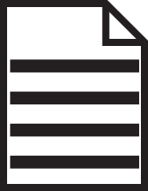

Pushing your commits
Remote Repository

Local Repository

Staging

Once a commit has been completed, it is good practice to push these changes from the Head to the remote repository, to do this run the command
git push origin master
the branch is defined by the final word in this command, so ensure that if you are uploading to a different branch than master you choose the correct one in this command, for example if you are on the branch Feature1 the command would look
git push origin Feature1
If the repository is not connected to a remote repository yet, you will need to add this using
git remote add origin "link to server"
This will then allow changes to be pushed from the Head tree to the remote repository